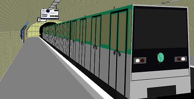

Here are my bve routes and trains
LONDON UNDERGROUND HAMMERSMITH AND CITY LINE for bve
Hammersmith and city line for bve2, bve4 and openbve.

CLICK HERE FOR MORE INFO AND DOWNLOADS
PARIS METRO for bve
I am makeing the whole of paris metro for bve4. I have currently made 6 of the 16 routes and all of the currently running trains.

CLICK HERE FOR MORE INFO AND DOWNLOADS
CONTACT ME
you can contact me on youtube - CLICK HERE
ALL OF THESE BVE ROUTES AND BVE TRAINS ARE MY COPYRIGHT. THESE BVE ROUTES AND BVE TRAINS CANNOT BE PUT ON OTHER WEBSITES OR BE ALTERED AND PUT ON OTHER WEBSITES